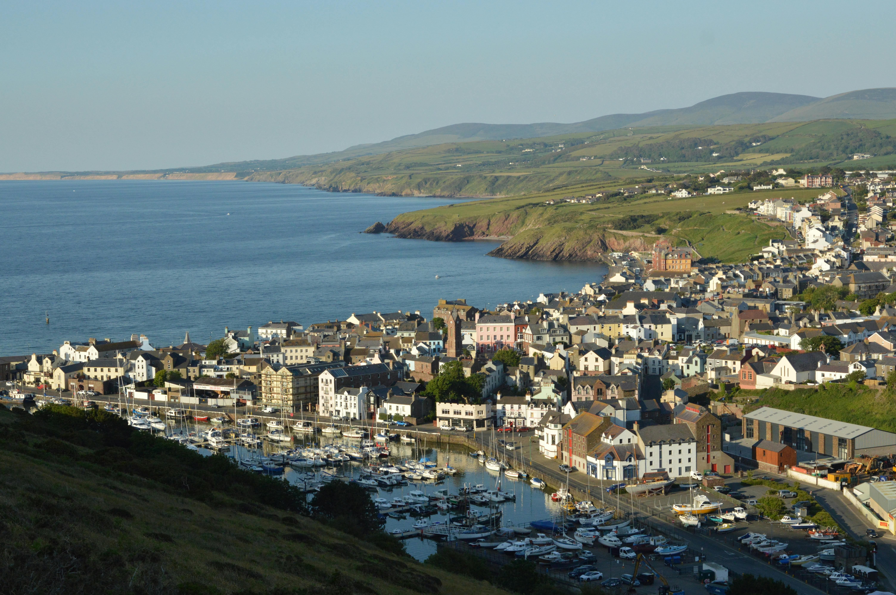
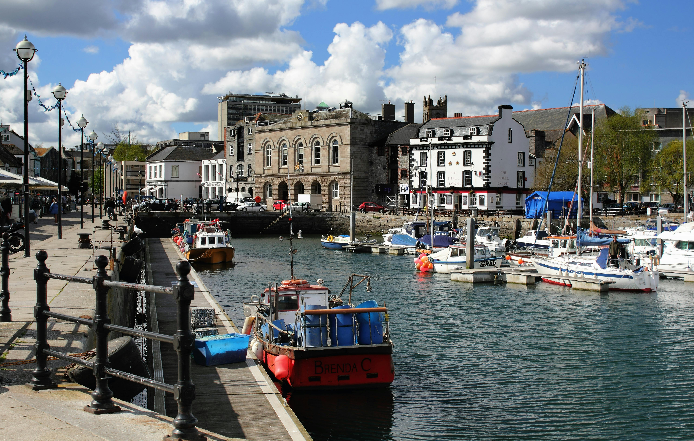
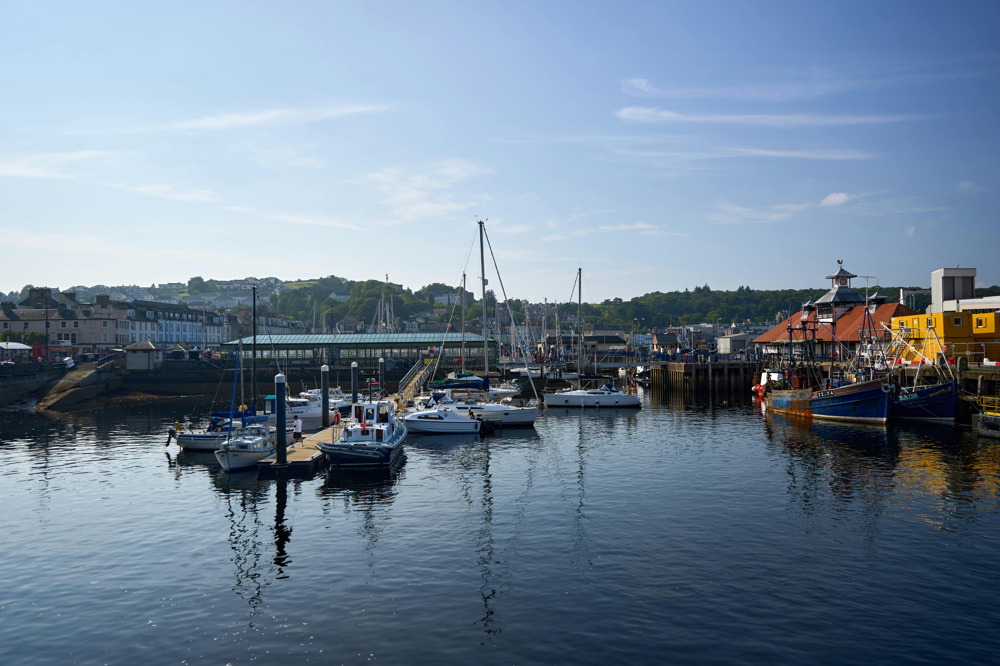
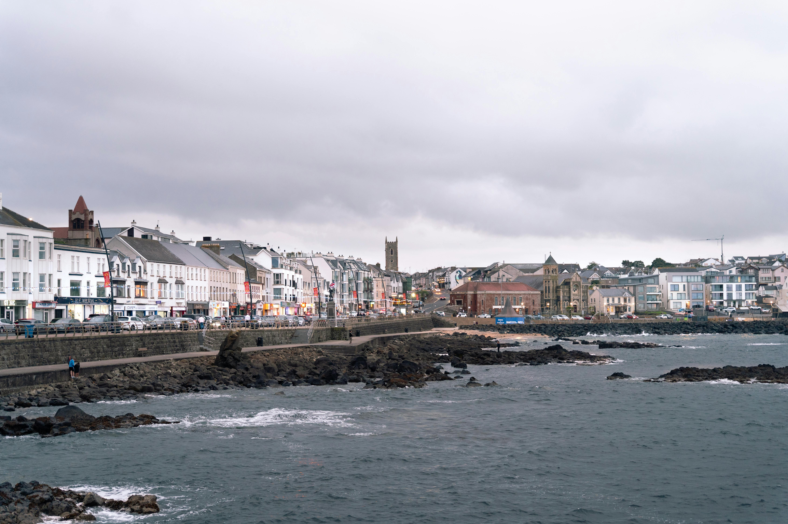

Before cheap flights changed everything, the Isle of Man was the summer holiday destination for thousands of Irish families — and ours was no exception. We went many summers as children, getting the ferry from Rosslare, staying in little hotels and B&Bs on the Douglas promenade, eating fish and chips in the rain, riding the horse trams along the seafront and feeding pennies into old amusement arcade machines. It felt exotic — British seaside, different currency, mountain railways, roads with no speed limit — without being too far from home. For a generation of Irish children, the Isle of Man was their first taste of somewhere genuinely abroad. And it was brilliant.




Both of us went to the Isle of Man many summers growing up — separately, with our own families, long before we knew each other. The ferry from Rosslare was the starting point — an adventure in itself for a child, the overnight sailing arriving into Douglas Harbour in the morning with the promenade hotels already visible from the water and the sense that something exciting was beginning.
The Isle of Man occupied a particular place in the imagination of Irish children at the time. It was abroad — it had different money, different stamps, a different flag — but it was manageable abroad, British-flavoured, close enough to home that parents felt comfortable. The promenade at Douglas, the horse trams, the arcades full of penny machines and the fish and chip shops on every corner gave it a classic British seaside character that felt exciting and familiar at the same time.
The weather, of course, was magnificently unpredictable. The Isle of Man sits in the Irish Sea and the mist and rain could arrive in minutes and vanish just as fast. Summers there were spent in a cycle of glorious sunshine, sudden downpours, ice cream nonetheless and fish and chips eaten sheltering under awnings. It was, in its own way, perfect.
Douglas is the capital of the Isle of Man and its promenade is one of the finest Victorian seafront stretches in the British Isles — a long, sweeping bay lined with grand Victorian and Edwardian hotels, guest houses and the colourful chaos of a proper British seaside town. For Irish children arriving for the first time, it was genuinely thrilling — the scale of it, the grandeur of the buildings, the sense of a proper seaside resort doing what it was designed to do.
The Douglas Bay Horse Tramway is one of the most charming and genuinely unique transport experiences in the British Isles — horse-drawn trams running along the promenade from the Sea Terminal to the Villa Marina. The trams date from 1876 and the horses that pull them are magnificent, enormous working animals that clip-clop along the seafront with complete dignity while generations of children watch from the railings. Riding the horse tram was one of the unmissable rituals of any Isle of Man childhood holiday — and it is still running today.
The amusement arcades along the Douglas promenade were a fixture of any Isle of Man family holiday — old penny-pushing machines, grabber cranes, fruit machines and the particular smell of seaside arcades that is impossible to describe but instantly recognisable to anyone who grew up going to them. Hours disappeared into these places. Parents were grateful for the shelter when the rain came. Children were happier than they would ever admit to being.
The Isle of Man has one of the most extraordinary collections of heritage railways anywhere in the world — and they are all still operating, which makes them not just a curiosity but a genuine and practical way to see the island.
The Snaefell Mountain Railway climbs from Laxey to the summit of Snaefell — the highest point on the island at 621 metres — on one of the oldest electric mountain railways in the world, opened in 1895. The views from the top on a clear day are extraordinary: England, Ireland, Scotland and Wales all visible simultaneously — along with the Isle of Man itself, the Kingdom of Heaven above and the Kingdom of the Sea below. Seven kingdoms from one summit. It is one of those claims that sounds like folklore until you are standing at the top looking at four countries at once and realise it is simply true.
The Manx Electric Railway runs from Douglas along the stunning northeastern coast of the island to Ramsey — through some of the most beautiful coastal scenery on the island, through small villages and along cliff tops with views across the Irish Sea. The carriages are original Victorian and Edwardian stock, beautifully maintained, and the whole experience has a timeless quality that is increasingly rare in modern travel. It stops at Laxey, making it the natural way to combine the coastal journey with a visit to the Laxey Wheel.
The Laxey Wheel — known as Lady Isabella — is one of the most extraordinary Victorian engineering achievements you will ever see, and the centrepiece of any Isle of Man visit. Built in 1854 to pump water from the Laxey lead mines, it stands 22 metres tall, painted in distinctive red and white, and it still turns today. It is the largest working waterwheel in the world and the sight of it — enormous, elegant, impossible — in a green Manx valley is genuinely jaw-dropping.
As a child, the Laxey Wheel was simply enormous and magnificent and slightly overwhelming. As an adult, the engineering story behind it becomes even more fascinating — the sheer ambition of building something this size in the 1850s, the ingenuity of the mechanism and the fact that it has been turning continuously, in various states of activity, for over 170 years. The village of Laxey around it is lovely too — a classic Manx village with good cafés and the Manx Electric Railway station right there for the journey back.
Peel Castle sits on St Patrick's Isle, connected to the town of Peel by a causeway, and its ruined towers and walls are one of the most atmospheric and striking sights on the island. The castle dates from the 11th century and the site has been occupied since Viking times — the Isle of Man's Norse heritage is felt strongly here. Peel itself is the most attractive town on the island's west coast, with a proper working harbour, excellent seafood restaurants and a character quite different to the promenade buzz of Douglas.
Port Erin is the classic Isle of Man family beach — a sheltered bay on the southwest of the island with a sandy beach, calm water and the kind of traditional seaside atmosphere that the whole island does so well. The village above the beach has good cafés and restaurants. On a sunny Manx day — they do exist — it is genuinely beautiful.
The Curraghs Wildlife Park in the north of the island was a fixture of any Isle of Man family holiday — a well-regarded wildlife park set in the Curraghs wetlands, home to a wide variety of animals and a favourite with children for decades. It has been substantially improved and expanded in recent years and remains one of the island's most popular family attractions.
Even if you visit outside of race season, the Isle of Man TT is impossible to escape — its spirit is woven into the fabric of the island. TT memorabilia in every shop, TT photographs in every pub, the names of legendary riders in every conversation. The roads themselves carry the history — you drive through corners and past landmarks that have names known to every motorsport fan in the world.
The TT races are held annually in late May and early June on public roads across the island — the Mountain Course covering 60 kilometres of ordinary Manx roads temporarily closed for the fastest and most dangerous motorcycle race in the world. Average speeds exceed 200km/h. The riders pass hedges, walls and lampposts at terrifyingly close range. The whole island becomes a motorsport festival for those two weeks.
Visiting during TT week is an extraordinary experience — the island fills with motorcycles and their riders from across the world, the atmosphere is electric and the racing itself is unlike anything in any other motorsport. But even outside race season, the roads with their absence of speed limits in places and their TT-famous corners give the island a unique energy that stays with you.
Horse-drawn trams along a Victorian promenade — still running since 1876. One of the most charming and genuinely unique transport experiences in the British Isles. Children love them. Adults love them. Everyone loves them.
22 metres tall, painted red and white, still turning after 170 years. The largest working waterwheel in the world and one of the most extraordinary Victorian engineering achievements you will ever stand in front of.
England, Ireland, Scotland, Wales, the Isle of Man, Heaven and the Sea — all visible from the summit on a clear day. The mountain railway getting you there is half the experience.
Viking-heritage ruined castle on a tidal island, connected to the most attractive town on the west coast. Atmospheric, ancient and completely unlike anything you find in Ireland or Britain.
Old penny-pushing machines, grabber cranes and the smell of seaside arcades. Pure nostalgia for anyone who went as a child — and still enormous fun for children visiting today.
Arriving into Douglas Harbour by sea with the promenade spread before you is one of those travel moments that stays with you. The ferry crossing is part of the experience — not just the means of getting there.
The Isle of Man is small enough to explore independently but a guided tour covers the highlights — the Laxey Wheel, Peel Castle, Snaefell, the TT course roads and the Viking heritage — with the context that makes everything make sense. TourRadar has great Isle of Man and British Isles options.
Disclosure: This is an affiliate link. If you book through it we may earn a small commission at no extra cost to you.
Viking heritage tours, castle visits, walking tours of Douglas, TT experience days and island-wide excursions — book your Isle of Man activities in advance.
Disclosure: If you book through this link we may earn a small commission at no extra cost to you.
This brilliant shore excursion covers the Isle of Man's Viking heritage and castle highlights — Peel Castle, Castle Rushen and the island's Norse history told brilliantly. Perfect for cruise visitors or anyone wanting to cover the historical highlights in a day.
Disclosure: This is an affiliate link. If you book through it we may earn a small commission at no extra cost to you.
Common questions
What to pack for the Isle of Man
The Isle of Man means layers, waterproofs and an umbrella you'll use more often than you expect. The weather changes fast and you'll be outdoors a lot.
The Isle of Man has its own mobile network — an eSIM with UK/international data keeps you connected across the island without surprises.
View on Amazon →Non-negotiable for the Isle of Man. The weather changes every twenty minutes and you will be outdoors at Laxey, Peel, Snaefell and the promenade.
View on Amazon →Peel Castle, the Laxey Wheel and Snaefell all involve walking on uneven ground. Good shoes make the difference.
View on Amazon →Long days out on the railways and around the island — keep your phone charged for maps and photos.
View on Amazon →For the railway trips, castle visits and promenade days — keeps everything together and your hands free for fish and chips.
View on Amazon →Always useful — especially for families with children doing castle ruins, coastal walks and mountain railways.
View on Amazon →Disclosure: These are Amazon affiliate links. If you buy through them we may earn a small commission at no extra cost to you.
The Isle of Man sits in the Irish Sea between Ireland and Britain — read our other nearby guides below.
Scotland, England, Wales and Northern Ireland — Edinburgh, London, the Causeway Coast and the Scottish Highlands.
Read the UK guide →Jersey and Guernsey — charming, picturesque and unlike anywhere else in Europe. Another Crown dependency worth exploring.
Read the Channel Islands guide →22 hidden Irish gems most tourists never find — for anyone who wants to explore what's on the other side of that Irish Sea crossing.
Read the Ireland guide →Get the ferry, ride the horse tram, take the mountain railway to Snaefell, stand in front of the Laxey Wheel, eat fish and chips on the promenade and drive a road with no speed limit. The Isle of Man is completely one of a kind.
Affiliate disclosure: if you book through our links we may earn a small commission at no cost to you. We only recommend experiences we've done ourselves.